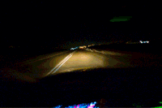
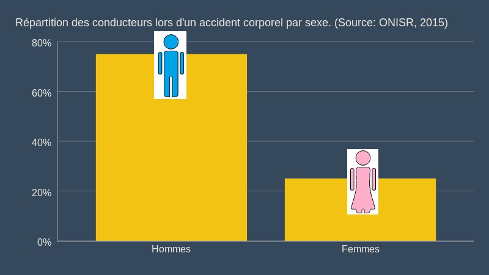

De la description des accidents de la route aux mesures de sécurité

Contexte Général
Combien d'accidents pour combien de victimes ?
On est en guerre? Oui, même si c'est mieux que dans les années passées.
155
accidents corporels par jour
210
blessés par jour
-33%
d'accidents en 10 ans
Un accident corporel est un accident ayant entraîné des dommages sur des personnes. En moyenne, en 2015,
on en comptait 155 par jour. Cela entraînait 210 personnes blessées et 10 tuées.
C'est beaucoup, mais c'est en baisse constante depuis les années '80.
Un pic d'accidents le vendredi, suivi d'un creux le week-end
La fréquence d'accidents varie fortement entre le début de la semaine et le week-end.
En effet, le vendredi, on recense, en moyenne, 189 accidents, c'est 20% de plus que le
reste de la semaine. Au contraire, le week-end, le trafic moins intense,
s'accompagne d'une baisse des accidents.
Des accidents en allant et en rentrant du boulot
Attention à vos déplacements le matin entre 8h et 9h et surtout le soir entre 17h et 19h!
Ils correspondent aux deux périodes les plus dangereuses, et pour cause, plus d'un accident
sur 4 se produit sur le trajet entre domicile et travail et un accident sur 20 à proximité d'une école.
Les conditions météo sont rarement à l'origine des accidents
Contrairement à ce que l'on pourrait croire, la météo ne peut être mise en cause que dans une minorité
de cas: 83% des accidents corporels se produisent dans des conditions météréologiques normales
et seulement 2% pendant des tempêtes. Les véritables causes sont plutôt à rechercher dans les
comportements humains ou les anomalies techniques: distraction, excès de vitesse, alcool, pannes
mécaniques, etc ...
Description
Où ? Quoi ? Qui ?
Les départements urbains sont les plus accidentés
Les accidents corporels sont plus fréquents dans les départements des grandes villes, avec en tête Paris, qui en compte
plus de 6000. A l'autre bout, la Creuse avec seulement 51 accidents.
Bonne nouvelle: La tendance est à la baisse dans 7 des 10 départements les plus frappés.
Deux accidents sur trois impliquent une voiture
97% des accidents corporels concernent trois véhicules: voiture (67%), moto (22%) et vélo (8%). Les poids lourds, les cars
et les autres moyens de transport ne représentent finalement que 3% des accidents. De quoi préférer
les transports en commun...
A partir de 14 ans, lorsqu'ils peuvent conduire des motos, les jeunes sont exposés à un risque croissant
d'accident, jusqu'à leurs 23 ans. Cette tendance se confirme pour le nombre de blessés et de tués.
...et d'hommes

Contrairement aux idées reçues, les hommes sont au volant dans 75% des accidents. De même,
ils sont majoritaires parmi les victimes: 76% des tués sont des hommes ainsi que 66% des blessés.
En plus de la maîtrise de la vitesse et de la limitation de la consommation d'alcool,
le bon réflexe, c'est l'utilisation des équipements de sécurité: ceinture ou casque. Ils permettent de réduire jusqu'à 95% le nombre de tués.
Où s'asseoir?
La probabilité d'être blessé lors d'un accident corporel dépend de l'utilisation d'un équipement de sécurité,
mais aussi de la place que l'on occupe dans le véhicule. A savoir, en voiture, les places arrière sont, en moyenne, plus dangereuses que
celles avant. En tant qu'accompagnateur, privilégiez donc la place à côté du conducteur.